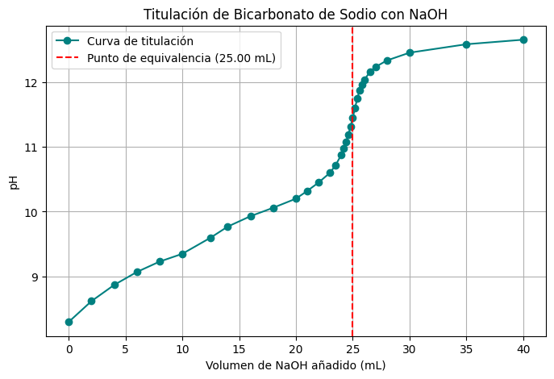
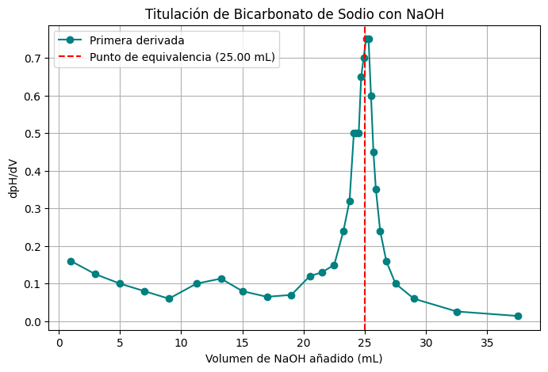
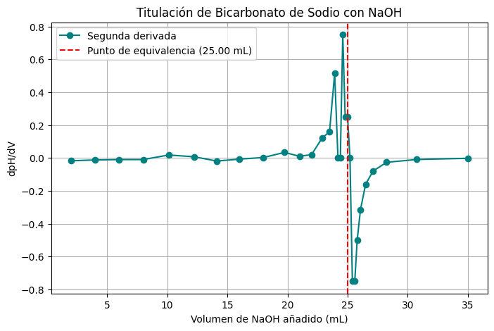

Titulación Ácido-Base#
Concepto
Los puntos de inflexión son importantes en las curvas de titulación ácido-base (también redox y complejométricas), ya que suelen indicar eventos importantes a lo largo en la reacción química, frecuentemente puntos de equivalencia.
Las mediciones experimentales son datos discretos y no hay una ecuación que derivar, así que nos vemos obligados a generar la derivada numérica.
A continuación se presentan valores de volumen de titulante y de pH de una titulación de bicarbonato de sodio (\(NaHCO3\)) con hidróxido de sodio (\(NaOH\)):
Volumen:
V = [
0.00, 2.00, 4.00, 6.00, 8.00, 10.00, 12.50, 14.00, 16.00, 18.00, 20.00,
21.00, 22.00, 23.00, 23.50, 24.00, 24.20, 24.40, 24.60, 24.80, 25.00,
25.20, 25.40, 25.60, 25.80, 26.00, 26.50, 27.00, 28.00, 30.00, 35.00, 40.00
]
pH
pH = [
8.30, 8.62, 8.87, 9.07, 9.23, 9.35, 9.60, 9.77, 9.93, 10.06, 10.20,
10.32, 10.45, 10.60, 10.72, 10.88, 10.98, 11.08, 11.18, 11.31, 11.45,
11.60, 11.75, 11.87, 11.96, 12.03, 12.15, 12.23, 12.33, 12.45, 12.58, 12.65
]
Grafique los datos del experimento:
import matplotlib.pyplot as plt
import numpy as np
V = np.array([
0.00, 2.00, 4.00, 6.00, 8.00, 10.00, 12.50, 14.00, 16.00, 18.00, 20.00,
21.00, 22.00, 23.00, 23.50, 24.00, 24.20, 24.40, 24.60, 24.80, 25.00,
25.20, 25.40, 25.60, 25.80, 26.00, 26.50, 27.00, 28.00, 30.00, 35.00, 40.00
])
pH = np.array([
8.30, 8.62, 8.87, 9.07, 9.23, 9.35, 9.60, 9.77, 9.93, 10.06, 10.20,
10.32, 10.45, 10.60, 10.72, 10.88, 10.98, 11.08, 11.18, 11.31, 11.45,
11.60, 11.75, 11.87, 11.96, 12.03, 12.15, 12.23, 12.33, 12.45, 12.58, 12.65
])
plt.figure(figsize=(8, 5))
plt.plot(V, pH, marker='o', color='teal', label='Curva de titulación')
plt.axvline(x=25.00, color='red', linestyle='--', label='Punto de equivalencia (25.00 mL)')
plt.title('Titulación de Bicarbonato de Sodio con NaOH')
plt.xlabel('Volumen de NaOH añadido (mL)')
plt.ylabel('pH')
plt.grid(True)
plt.legend()
plt.show()

Realice la gráfica de la primera derivada. Recuerde que podemos aproximar numéricamente la primera derivada mediante:
Note que estamos tomando un punto y el siguiente, así que tenemos que colocar en el eje horizontal el promedio de volumen de ambos puntos:
dpH_dV = (pH[1:] - pH[0:-1]) / (V[1:] - V[0:-1])
Vm = (V[0:-1] + V[1:]) / 2
plt.figure(figsize=(8, 5))
plt.plot(Vm, dpH_dV, marker='o', color='teal', label='Primera derivada')
plt.axvline(x=25.00, color='red', linestyle='--', label='Punto de equivalencia (25.00 mL)')
plt.title('Titulación de Bicarbonato de Sodio con NaOH')
plt.xlabel('Volumen de NaOH añadido (mL)')
plt.ylabel('dpH/dV')
plt.grid(True)
plt.legend()
plt.show()

Realice la gráfica de la segunda derivada. Recuerde que podemos aproximar numéricamente la segunda derivada mediante:
Note que estamos tomando un punto y el siguiente, así que ahora tenemos que colocar en el eje horizontal el promedio de los promedios de volumen de ambos puntos:
d2pH_d2V = (dpH_dV[1:] - dpH_dV[0:-1]) / (Vm[1:] - Vm[0:-1])
Vmm = (Vm[0:-1] + Vm[1:]) / 2
plt.figure(figsize=(8, 5))
plt.plot(Vmm, d2pH_d2V, marker='o', color='teal', label='Segunda derivada')
plt.axvline(x=25.00, color='red', linestyle='--', label='Punto de equivalencia (25.00 mL)')
plt.title('Titulación de Bicarbonato de Sodio con NaOH')
plt.xlabel('Volumen de NaOH añadido (mL)')
plt.ylabel('dpH/dV')
plt.grid(True)
plt.legend()
plt.show()
